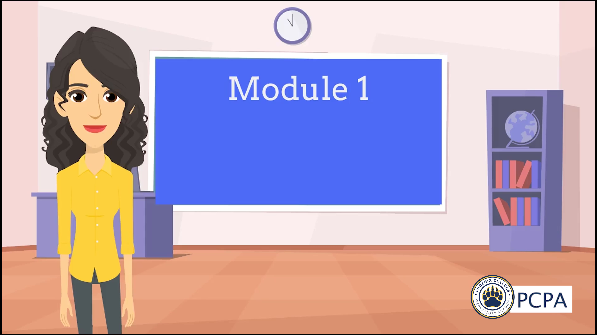

Developer & Facilitator
Training and Development
Adult professional development — asynchronous modules, live training sessions, and facilitated visioning work for teachers and school leaders.

Asynchronous Training: Scope and Sequence
This is a sample from a series of modules designed to train teachers on the use of a document called the Scope and Sequence. While the full version includes six modules and incorporates interactive elements, this is the video-only content of module one.
Live Training: Deliberate Practice and Goal Setting
This professional development uses Dr. Marzano's framework, The Art and Science of Teaching, to guide teachers through a review of the framework (previously discussed) and to use it for selecting personal growth goals.
Live Development: Creating a Vision Statement
In collaboration with PCPA, I led the development of a school-wide mission statement through a series of facilitated discussions and visioning exercises. The accompanying slides contain minimal text, as key ideas were drawn out and refined through interactive, verbal engagement with stakeholders.
* I did use pre-fabricated slide templates.